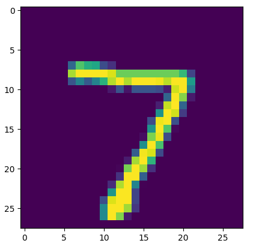
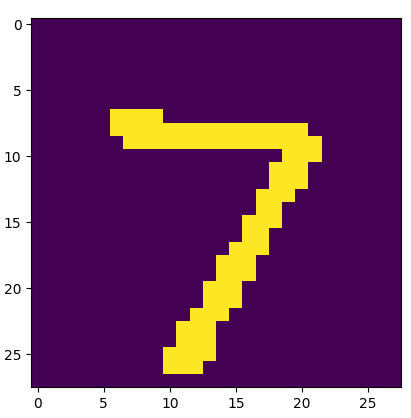
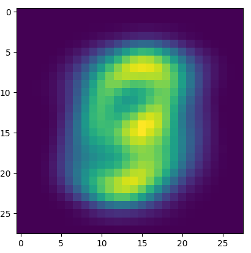
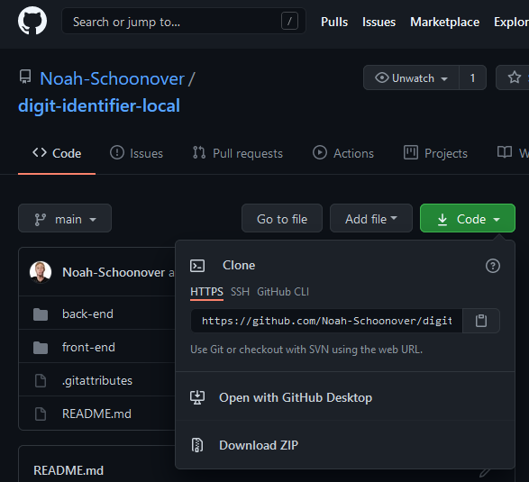
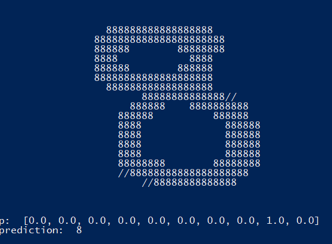

Use the mouse to draw a digit (0-9) in the canvas. The input will scaled, centered, and queried in a machine learning model as soon as the mouse button is released. The result will be displayed in
a blue box.
Introduction
This website is a practical application of machine learning. The image
data from the sketch box above is captured each time the
user finishes a stroke. Next, the image is scaled, formatted, and sent
to a Linux server that hosts a pre-trained machine learning model. The
server queries the model with each image transmission and responds with
the prediction. Finally, the result is displayed on this page for the
user to see.
The following sections will discuss this project in more detail. Firstly,
a brief background on machine learning and the libraries used will provide
a necessary foundation to understand and recreate this project. The
Challenges section will explain unexpected obstacles that were encountered
while developing the project and how they were overcome. The Procedure
section will provide a step-by-step guide for building this application.
Finally, the Future Improvements, Lessons Learned, and Conclusion sections
will reflect on the benefits of this project and ideas for improving the
algorithm accuracy.
Background
This section provides relevant background regarding machine learning and
the tools used in developing this project. The Machine Learning section will
define and describe machine learning in an appropriate context for understanding
this project. The subsequent section will discuss the source code libraries
utilized by the backend server.
Machine Learning
Machine learning is a category of algorithms that rely on experience to improve performance or make predictions. The learner algorithm gains knowledge by collecting data from its environment or analyzing provided data. The data could take many forms, such as human-labeled training sets or any information that the learner may record from its environment. The amount of data and data quality are crucial factors in the algorithm's overall success or prediction accuracy. For example, a simple machine learning algorithm might identify handwritten numbers, where the learner relies on human-labeled images of digits. The more sample images provided, the more accurate the algorithm, assuming the samples bear appropriate labels. Machine learning solves complex problems in many fields such as aerospace engineering, computer vision, biomedical engineering, finance, and entertainment [2]. Machine learning can be applied to almost any learning task, such as natural language processing, speech recognition, self-driving cars, fraud detection, and so on [1].
The vast majority of machine learning tasks fall into well-defined categories which help developers determine how to configure and train the learner. Standard machine learning task categories include:
- Classification, assigning classes to items,
- Ranking, ordering item according to some criteria,
- Regression, predicting actual values for some figure,
- Clustering, grouping items together, and
- Dimensionality reduction, representing items with lowered complexity
These categorizations are important for determining the appropriate learning method for a task. Experts in the field of machine learning have produced generalized learning methods which apply specifically to certain task categories.
The machine learning process may occur through one of the following methods:
- Supervised learning, with a strict reliance on labeled data. The learner receives a large amount of labeled data and attempts to make predictions about unlabeled data
- Unsupervised learning, relying solely on unlabeled data. It is difficult to evaluate the learner with this method as there are no labels to reinforce rewards or loss
- Semi-supervised learning, relying on a mix of labeled and unlabeled data. This method is used when labeled data is expensive or difficult to obtain, but unlabeled data is readily available.
- Transductive inference, relying on a combination of labeled and unlabeled data but only making predictions within a strict dataset
- Online learning, implementing multiple rounds of testing and training in which the learner makes a prediction on unlabeled training data and then receives the correct label. If the prediction was wrong, the learner records a loss, all the while attempting to reduce “regret” by minimizing loss
- Reinforcement learning, implementing multiple rounds of testing and training through interaction with the environment. The learner attempts to maximize its reward feedback by exploring new interactions. However, the learner may stop exploring the environment to exploit known actions for a reward [1]
- Active learning, interactively and adaptively collecting required data. This method is similar to supervised or passive learning, except the learner requests only the data it needs to maximize its reward, thereby requiring less data
Regardless of the learning method, the machine learning algorithm relies fundamentally on generalizations of data: relating data with a prediction and a reward without any concern for the actual meaning or form of the data. This is the key to why machine learning works, and the introduction to its importance in the field of computer science. Without machine learning, a specific algorithm must be created for every task. Rather than allowing the learner to improve through experience, it would have to be taught every detail necessary to make a prediction. Oftentimes, this is impossible. With machine learning, problems may be solved with a layer of abstraction (by generalization), and thus, simplicity. The learner does not need to know details about its data in order to associate predictions with rewards. Rather, the algorithm learns like a human; relying on experience and reward maximization as a form of conditioning. This grants a simple solution to very complex problems in computer science. Machine learning removes the need to elucidate every aspect of a problem, as is required in most algorithms, and instead requires only an adequate amount of data to train the learner.
The Keras Module and its Application in this Project
The digit interpretation machine learning model was built using the Keras
machine learning module for handwritten digit recognition.
Keras
is built on
Google's TensorFlow, a lower-level
framework for machine learning. Essentially, Keras makes it easier for beginners
to get started with machine learning with a simple API.
A common starting
project for beginners in machine learning is training and testing a model
using the MNIST dataset
(note that the MNIST webpage is often unavailable as it is frequently overloaded
with traffic). The MNIST dataset is among the built-in Keras
packages, consisting of 70,000 labeled, handwritten digit
samples. Usually, 60,000 of these images are used for training the neural network,
and 10,000 are used for testing. For the application of this project,
however, all 70,000 were used for training. This is because the user input
is the true testing data, and the extra training samples
help make the model more accurate. In this case, the machine learning task is
classification realized by supervised learning.
The exact usage of this library will be explained in the Procedure section.
Challenges
The unexpected challenges in developing this project proved to be very educational.
The first major challenge was in routing the communication between the webpage and the server.
Initially, the server script utilized a basic socket library in an attempt to
reply to the browser. This failed, and none of the messages appeared. The solution
was simple after adequate research: the server must communicate using websockets.
Basic sockets send and receive raw TCP (Transmission Control Protocol) information only. The internet relies on
HTTP (Hypertext Transfer Protocol), a communication protocol built on top of TCP. This means that each transmission
contains required HTTP headers, and browsers will ignore any packets of improper format.
After switching to the websockets Python
library, the headers were generated and interpreted automatically.
The next challenge relates directly to the machine learning model and its accuracy.
After resolving the websocket issue, the script was easily modified to query the neural network
with the received input data. The results, however, were very inaccurate; nearly all
of the model's predictions were incorrect. This implied that the input data
does not adequately resemble the training data. By plotting one of the testing images
from the training set, it was clear to see that the MNIST samples contained varying
pixel values. Note that the plotting function used to display this image uses
a heatmap with arbitrary colors; the yellow regions represent the black pixels.

The sketch box in the webpage provides only black or white pixel data to the server.
This is detrimental to the classification process, as the algorithm will have had
no experience with associating pure black and white images with the appropriate labels.
The solution was to iterate through the entire NMIST dataset and change all grayscale
values to pure black.

The model was retrained with the pure black data, and the accuracy increased
substantially.
The final challenge pertained to the sizing
and positioning of the input data in contrast to that of the training data. By
overlaying all 70,000 samples and averaging their pixel information, it is possible
to plot the average location and size of the training data.

The sample data, on average, is centered and scaled to fill about 75% of the
image dimensions. However, the user may draw their digits without any constraint
on size or position. This produces another disparity between the training data
and the input data. The solution to this problem was to crop the user input, and scale and center it to match the training set. The intermediate cropping and centering canvases can be seen below this writeup.
Procedure
This section provides instructions for building this project on your own
server or local machine. This website clearly resides on a webserver, and
the machine learning model lives on a separate linux server. Of course, there
are many ways to configure the application, but this instruction set will
explain the process for configuring both components locally. In other words,
these instructions do not require that you have servers, but the project will
not be accessible through the web.
Prerequisites
- Python 3.6 or later. Python
is used on the backend of the project for running the machine learning model
and the backend websocket.
- Pip, the most popular Python package manager. Pip is already installed with
Python 3.4 and above, but it is important to upgrade pip in order to have access
to the latest package repositories.
- Open the terminal on your machine.
- Run the command: pip install websockets to install the Python websockets library.
- Run the command: pip install tensorflow to install TensorFlow.
- Run the command: pip install keras to install Keras.
- Visit https://github.com/Noah-Schoonover/digit-identifier-local
and click the green Download button. Download the source code as a ZIP file into the desired directory. Extract the ZIP.

- Navigate to the source directory in your terminal. Start the Python server with python ./back-end/websocket_server.py.
A long list of warnings will appear stating that TensorFlow was not installed with GPU support, but these can be ignored.
- Open your web browser. Press Ctrl+O and browse to the source code directory. Open the index.html
file in the frontend folder. The webpage will appear with the sketch box.
- Draw in the sketch box. The input should appear in the terminal running the Python script. The first query may take a while, but subsequent
queries will be faster.

Future Improvements
- TensorFlow provides a
JavaScript platform, which is capable of
importing Keras models for running directly on a webpage. This may
be much easier than using a server and websockets to transfer data queries
and results; the queries would occur directly in the browser.
- Data augmentation is the process of generating new data from existing
data. Instead of obtaining entirely new samples and labels, it is
possible to adjust existing data to create more training points. For example,
the MNIST dataset could be shifted a few pixels in each direction or stretched and scaled.
This effectively increases the network accuracy by increasing the likelihood of input resemblance. Additionally, the training data for low accuracy digits can simply be duplicated in order to force the algorithm to train harder on those digits.
- Data augmentation could also be used on the input, not just the training data.
In future updates, this website will augment the input by shifting and scaling. Each
variation of the input will be queried in the model, and the true result will be
the most confident classification.
- Future versions of this project may have a training mode that will prompt the user
to draw a specific digit. The input will be saved and labeled for use as training data
to drastically increase the neural network accuracy. Alternatively, the user could
click a button when the model guesses the digit incorrectly in order to enter the correct label.
Lessons Learned
This project has thoroughly expanded my depth and understanding of the related concepts.
By applying a simple machine learning algorithm to a real project, I learned
about the true challenges of obtaining accurate predictions. While it is
surprisingly simple to train and test the MNIST Keras model, creating a bridge
between user input and the training data is very challenging. The input data
must resemble the training data and vice versa.
In addition, I discovered and successfully applied data processing and data augmentation.
The most interesting dilemma is the balance between preprocessing and augmentation;
it is up to the designer to decide which to pursue in any given scenario.
Finally, I gained fundamental knowledge on web and server applications, including the use of JavaScript,
JQuery, Python, and socket programming.
Conclusion
My newfound understanding of the concepts applied in this project will be useful for
years to come, as my career will surely involve machine learning development.
I will continue to update this project with improvements to the algorithm as well
as new information for readers. The initial goals for this project were met,
but the model needs to be more accurate. This project will continue to provide an interesting challenge
and an educational experience.
Citations
[1] Mohri, Mehryar, Afshin Rostamizadeh, and Ameet Talwalkar. Foundations of machine learning. MIT press, 2018.
[2] El Naqa, Issam, and Martin J. Murphy. "What is machine learning?." Machine learning in radiation oncology. Springer, Cham, 2015. 3-11.